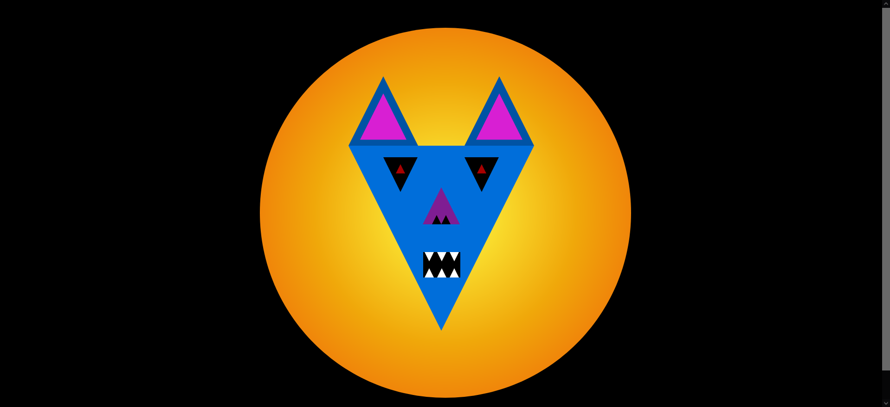
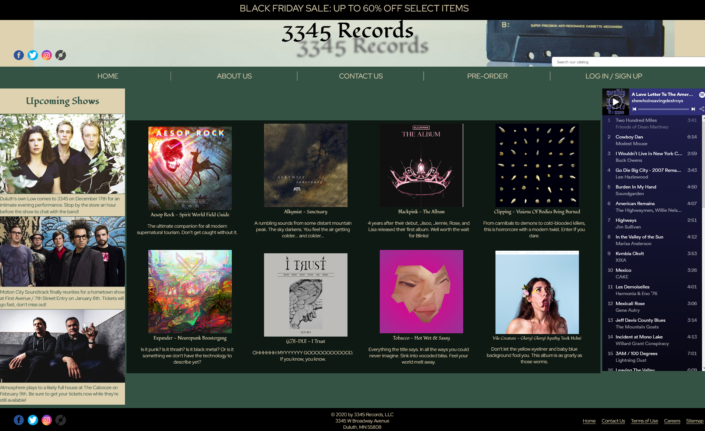
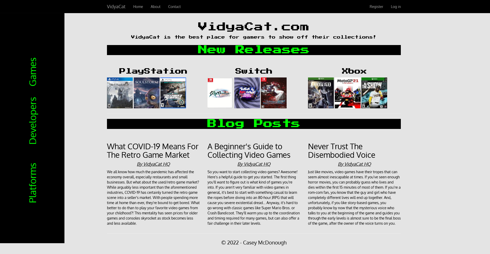

ABOUT ME
Hey there, my name is John McDonough, but I go by Nych (pronounced like Nick)! I am a polymath with a love of language, puzzles, art, people, and numbers. I have a passion for data and a keen eye for details and patterns; and I love to dig into the "hows" and "whys" of trends and outliers alike. Perfection is the enemy of progress, so I strive for continuous improvement in every role I occupy and I make it a personal goal within the first 60 days of any position to know my job well enough to be able to train a new hire with no prior knowledge.
My professional background is varied among several fields including retail, food service & hospitality; music production & radio broadcasting; software engineering; education; and financial services. Using this wide array of experience in addition to my personal interests and knowledge, I take a syncretic approach to problem solving that allows me to see solutions that may otherwise go unexplored.
As a lifelong learner, I strive to absorb as much knowledge in as many different disciplines as I possibly can, whether in a structured classroom setting or in my own free time. I studied Economics at Indiana University-Purdue University Indianapolis and have received multiple certificates and training in coding & data analysis concepts; and I am currently enrolled at San Bernardino Valley College for an Associate of Science in Business Administration with a certificate in Bookkeeping and at National Universtity for a Bachelor of Science in Paralegal Studies. Outside the classroom, I have taught myself to play drums, bass, guitar, and piano and to record produce music ‐ all of which I now teach to youths as part of a local nonprofit organization. I also enjoy learning about car maintenance and have been able to successfully perform oil changes and brake pad & rotor replacements.
When I am not coding, I am likely to be playing, producing, or listening to music; watching movies; playing video games; skateboarding; cooking; or spending time with my partner and fur babies!
Professional Highlights
2012: I started my first job as a server at a local Thai restaurant. I was a very shy and soft-spoken person at the time, and didn't really know how to work with the public. After considering quitting multiple times, my boss took me aside and told me (nicely) that I needed to get it together or I wasn't going to last in the workforce. I took his advice to heart and challenged myself to break out of my shell and communicate with more confidence, which really shaped my interactions with customers and clients in all of my future roles ‐ and still does to this day. By the time I left the restaurant, I had trained several dozen new employees and become one of the owner's most trusted servers.
2017: I took on a part-time role at a second-hand media & electronics store. Here, I was able to use my personal knowledge and passion for gaming and tech to help customers get exactly what they needed. One of my favorite moments was when I helped a caretaker at a facility for individuals with disabilities find a gaming console and several games that would be accessible and fun for the people in the facility. I was promoted to a shift manager role just 7 months after being hired and assisted with various outside projects, including remodeling the store.
2018: My first desk job was as a data entry specialist for a financial services company. Despite receiving minimal training due to a staffing shortage at the time, I was able to pick up the work almost immediately, and in fact was chosen to train a new employee that started only two weeks after I did; they are now an Operations Manager within the company.
2019: The manager of the escrow department scouted me out to join their team, giving me a project to clean up client database integrations and set up new clients' address book databases. After a considerable amount of research into various insurance company remittance addresses, I created a master list of verified addresses for payments and remapped over 100 clients' address books to match it.
2020: After the aforementioned project, I was given some clients of my own to manage escrow payments. As time went by, I accumulated a portfolio of 15 lender clients, 3 of which were in the top 5 largest clients by volume and 2 of which were assigned to me by direct request from the clients after I filled in as a backup while their original account manager was out of office.
2021: One of the most fun and educational projects I have ever worked on was when the escrow department hired a team of third-party business analysts to scrutinize our daily workflow and implement improvements. Because of my technical knowledge and track record of excellence and efficiency, I was chosen as the consultant to synthesize the viewpoints of our UX/UI and software development teams, the business analysts, and my own escrow team. This involved creating presentations and leading meetings to explain and demonstrate various processes to the non-escrow teams and to explain technical concepts to the escrow team. As a result of everyone's efforts, payment errors and client escalations were reduced by over 80% and client onboarding time was reduced by an average of 400%.
2022: After graduating from a software development bootcamp and serving as a teaching assistant there for one course, a member of its board reached out to me personally to offer me a position at his cyberinsurance startup. I was tasked with building an ETL pipeline to render SEO-optimized web pages for a client using Node.js within the Amazon Web Services cloud environment. At the time, I only had experience with C# and had never coded for a cloud server before. I worked extra long hours to get up to speed and meet my 60-day goal, which I was able to do. However, the first iteration of the pipeline was glacially slow and inefficient, so I worked closely with a senior dev to refactor each piece of the workflow for better performance ‐ including building an API to ping the client server and monitor the progress in order to work around the 15-minute Lambda timeout restriction. Together, we were able to get the runtime reduced by over 500% and produce a production-ready pipeline.
2023 - 2026: Unfortunately, I was laid off from the startup due to budgetary constraints. Since then, I have worked a few odd jobs and sustained myself by driving for DoorDash. In pursuit of self-improvement and professional development, I have also re-enrolled in college and am working on some personal passion projects including writing & recording albums, writing poetry & fiction, designing & coding an RPG, and building a personal blog website from scratch.
My Projects
The images below are links which will take you to the code repositories for the respective project. Please feel free to browse around to get a sample of my work - though be aware that these were written when I was still a student, so they are not indicative of my current coding style and ability level.
CSS Creature

The CSS Creature was a challenge to design a face using only CSS to style HTML <div> tags. I created a triangular creature loosely based on Katy Kat from Parappa The Rapper and Frylock from Aqua Teen Hunger Force, using an outrun/synthwave aesthetic, which is one of my favorite color palettes (if you couldn't tell).
Looking back on this project now, and even in the thumbnail for this gallery entry, I see how little I knew about responsive design when I was first starting out. The face is off-center on the circle, and completely outside of the cirle on screens that are larger or smaller than 1920x1080 - the resolution of the monitor I was using at the time. Now that I have done more full-stack projects, I have learned the beauty of Bootstrap and mobile-first design patterns for front-end work.
Static Storefront

The static store front project was an exercise in HTML and CSS. For this project, I created a mockup of a record store website, featuring sections for new music releases, nearby concerts, and a Spotify <iframe> to showcase recent listening.
While I think the site turned out pretty well for just being raw HTML & CSS, this project also lacks the fundamentals of responsive design. Again, it looks okay on a 1920x1080 screen, but elements become shifted around and end up in weird places on any screens outside that resolution. This one could easily be cleaned up with some Bootstrap work - which is the layout style I was trying to copy before I even knew what Bootstrap was!
Mimi Parker forever.
Business Challenges Console App

These challenges were the final project for the first section of my ElevenFifty course. The challenges covered a variety of business cases.
- Creating a café menu and list of ingredients
- Insurance claims processing
- Employee ID badge access control
- Budgeting for company outings
- Custom email templates based on customers' purchase history
- Categorizing vehicles by fuel type
- Inventory tracking for food vendors at a company BBQ
YMCA API Group Project
This group API project was my first experience coding in a team environment. Working collaboratively was awesome, since I got to see how other people write their code and how different minds can come up with different solutions to the same problem. Our group was very supportive and helpful to each other throughout the project, and even when the GitHub branches got wonky just a few days before the due date, and the only working copy was on one of our local machines, we kept our cool. We worked together to resolve the Git issues and were able to turn in a fully functional project that met many of its stretch goals.
I'm still proud of this project, and I'm definitely grateful for the Git lessons it taught me. Working on a team of devs is a much different experience than just coding by oneself, and figuring out how to integrate 3 separate styles and files into a cohesive codebase was incredibly satisfying.
VidyaCat MVC Project

The final boss of Eleven Fifty - the individual MVC application. The challenge was to build a fully fleshed-out back end and customized front end using the MVC structure. I chose to build a repository for video games, with information about the developer, the platform, release date, genre, ESRB rating, and more. All columns in the list views are fully linked to view other lists filtered by the respective column, and the detail views for each game, developer, and platform are fully linked as well. One of my stretch goals was to implement user-specific collections - for games the user has played, games they own, and games they want to own - but while attempting to implement the functionality I realized I was in over my head and was lost in a sea of debugging just 4 days before the due date. Thus, the finished product linked here is the result of 1 day of back-end coding, 1 day of back-end debugging, and 1 day of Razor/CSS front-end implementation.
Once again, due to the rush of trying to rewrite the whole project, I did not have the time to implement the Bootstrap functionality that would have made the site so much cleaner and more professional-looking. When I entered into the "Software Development" program, I was not expecting to work with anything front-end at all; in fact, I was averse to learning it because I wanted to perfect the back-end first. Now having worked in a full-stack role, I wish that I would have learned basic front-end functionality much sooner than I did. Such is life!